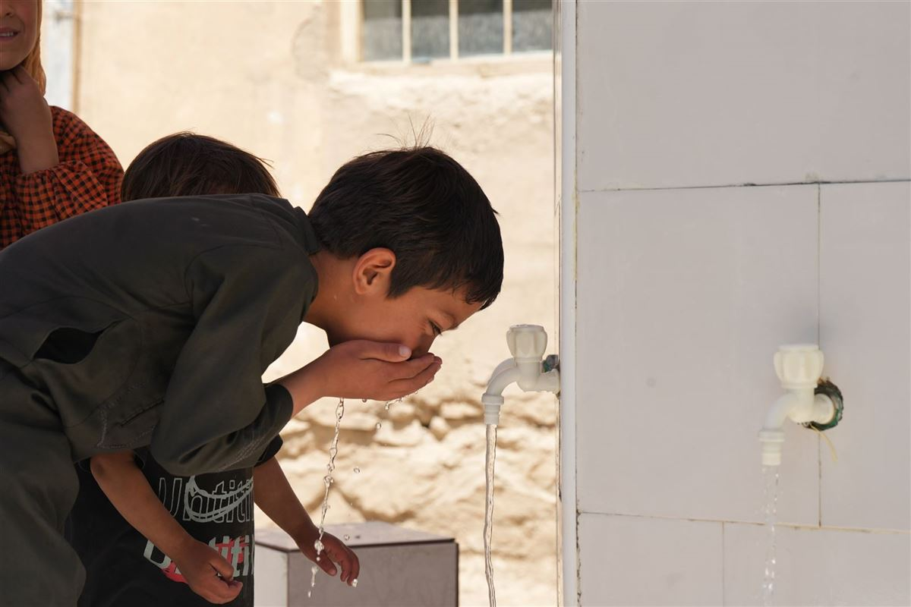
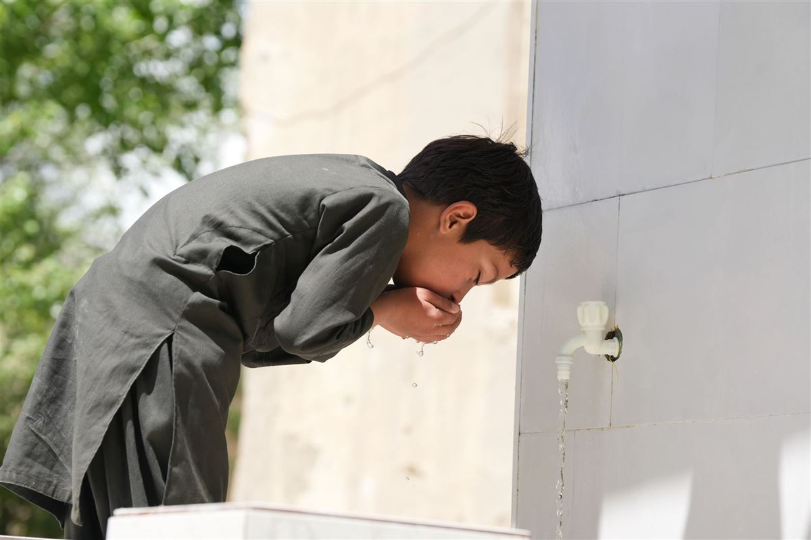
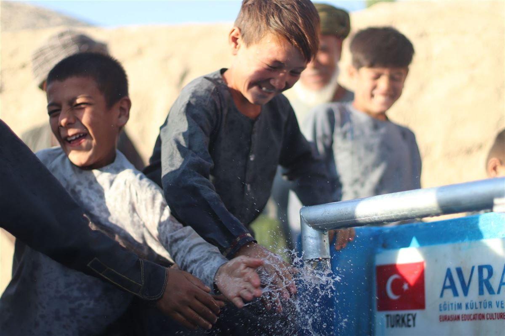
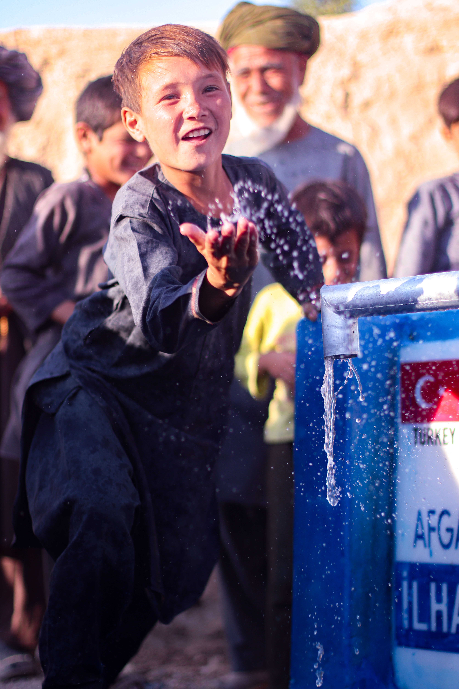
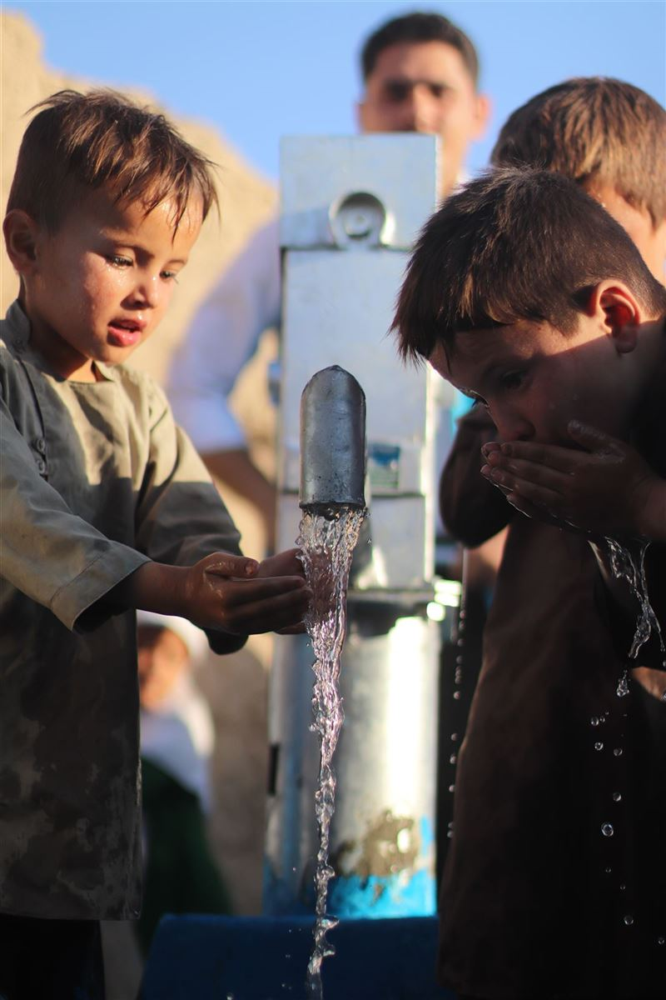

Temiz suya erişimin zor olduğu kırsal bölgelerde su kuyuları açıyor; çocukların, ailelerin ve köylerin hayatını dönüştürüyoruz.
 Su kuyusu çalışmalarımızdan kareler
Su kuyusu çalışmalarımızdan kareler
Su kuyusu projemiz kapsamında; temiz içme suyuna erişemeyen bölgelerde sondaj çalışmaları yapıyor, uygun derinlikte su bulunduktan sonra kuyuyu güneş enerjili su sistemi, depo ve musluklarla donatarak köyün kullanımına sunuyoruz. Açılan her kuyu, o bölgede yüzlerce insanın hayatını doğrudan etkileyen kalıcı bir eser olarak kabul ediliyor.
Kuyu açılan bölgelerde çocukların su taşıma yükü azalıyor, su kaynaklı hastalıkların önüne geçiliyor ve köylüler tarım ile hayvancılık faaliyetlerinde suya erişebiliyor. Her kuyunun üzerine bağışçının adının yazıldığı bir plaket yerleştiriliyor ve bağışçıya açılış raporu sunuluyor.
Temiz suya erişimin kısıtlı olduğu kırsal bölgeler ve afetten etkilenen alanlar.
Sondaj kuyusu, güneş enerji sistemi, su deposu ve musluk noktaları.
Bağışçı plaketli, uzun ömürlü ve bakım planı olan kuyular.
Bir su kuyusunun açılması, bölge tespitinden açılış raporuna kadar aşamalı bir süreçle yürütülür:
Saha ekiplerimiz su ihtiyacının en yüksek olduğu bölgeleri yerinde inceleyerek öncelik sıralaması yapar.
Bölgede yer altı suyu varlığı araştırılır, sondaj noktası ve tahmini derinlik belirlenir.
Profesyonel ekiplerle sondaj yapılır, su kalitesi test edilir ve uygunluğu belgelenir.
Güneş enerjisi sistemi, su deposu, pompa ve musluk noktaları kurularak sistem devreye alınır.
Kuyu, köy halkının katılımıyla hizmete açılır; bağışçı plaketi yerleştirilir ve rapor sunulur.
Su kuyusu çalışmalarımızdan kareler:







.JPG)
.JPG)
.JPG)
Bu sayfa, sahadan yeni fotoğraflar eklendikçe güncellenecektir.
Su kuyusu projemiz hakkında merak edilenler:
Derneğimizin su kuyusu kampanyaları üzerinden bağış yapabilir; kuyunuz bölge tespiti, sondaj ve kurulum sürecinin ardından hizmete açılır.
Süre, bölgenin jeolojik yapısına göre değişir; sondaj ve kurulum çalışmaları genellikle birkaç hafta içinde tamamlanır.
Saha ekiplerimiz, temiz suya erişimin en kısıtlı olduğu bölgeleri yerinde inceleyerek öncelik sıralaması yapar.
Evet. Her kuyuya bağışçının adının yer aldığı bir plaket yerleştirilir ve bağışçıya açılış raporu sunulur.
Kuyularımız, derneğimizin bakım planı kapsamında düzenli olarak kontrol edilir ve ihtiyaç halinde onarılır.